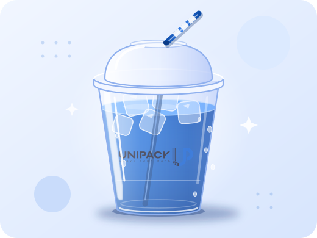

01 / DRINKWAREKonsultasikan cup →
Cup Plastik
Pilihan cup untuk minuman dingin dengan beberapa material dan bentuk. Sesuaikan kapasitas serta model cup dengan jenis minuman yang dijual.
MaterialPP · PET · Injection
BentukFlat · Oval
Ukuran12–22 oz, tergantung tipe